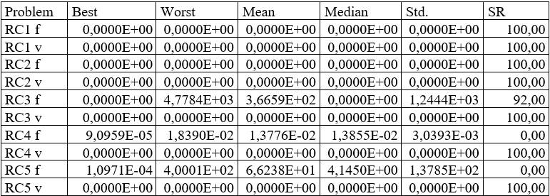
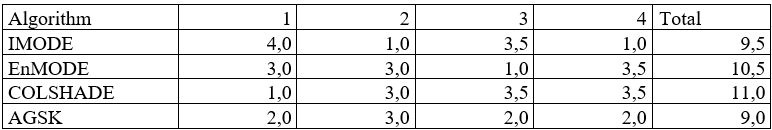
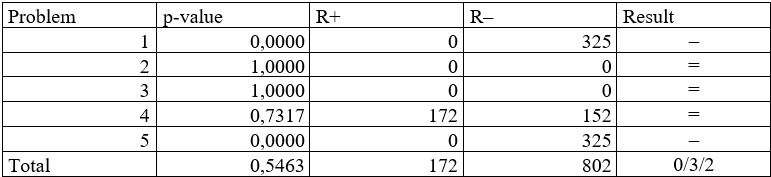
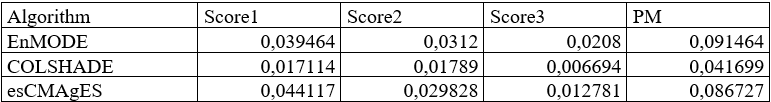

CEC2020 Algorithms Comparision
Środowisko testowe, które powstało w celu przeprowadzenia badań nad algorytmami zgłoszonymi do konkursu CEC2020, którego używać można za pomocą komend wpisywanych do konsoli. Większość komend posiada te same parametry wywołania, które oznaczają to samo dla każdej komendy. Każda z nich może zapisywać wyniki swojego działania w domyślnym folderach, które zdefiniowane są w pliku properties. W środowisku można przeprowadzić następujące działania:
- Optymalizacja funkcji
- Agregacja wyników optymalizacji
- Rysowanie krzywych ECDF
- Przeprowadzenie testu Wilcoxona
- Wyznaczenie rankingów na podstawie zasad konkursów CEC2020
Optymalizacja funkcji
Przeprowadzenie optymalizacji funkcji z benchmarku przez wybrany algorytm podaną liczbę razy. Opcjonalnie można również podać maksymalną liczbę ewaluacji funkcji. Jeśli nie zostanie ona podana, zostanie użyta domyślna wartość z wybranego benchmarku. Wyniki optymalizacji dla poszczególnych uruchomień zostaną zapisane w domyślnym folderze results_test/[nazwa_algorytmu]/[nazwa_benchmarku] w pliku o nazwie [numer_funkcji]_[wymiar_funkcji]D.csv. Żeby przeprowadzić optymalizację, należy użyć następującej komendy:
python optimize.py BENCHMARK ALGORITHM FUNCTION DIMENSIONALITY RUNS [-f BUDGET]
UWAGA: przed przeprowadzeniem optymalizacji dla funkcji z benchmarku CEC2020 – Competition on Single Objective Bound Constrained Numerical Optimization (CEC20nonconstr) należy skompilować funkcje z tego benchmarku napisane w języku C++ oraz ustawić odpowiednią wartość w pliku properties.
Dla systemu Linux:
g++ -shared -o test_functions/cec2020.so -fPIC test_functions/cec2020.cpp
W pliku properties ustawić zmienną SYSTEM (pierwsza linia) na linux.
Dla systemu Windows:
g++ -shared -o test_functions/cec2020.dll -fPIC test_functions/cec2020.cpp
W pliku properties ustawić zmienną SYSTEM (pierwsza linia) na windows.
Przeprowadzenie optymalizacji funkcji z benchmarku przez wybrany algorytm podaną liczbę razy. Opcjonalnie można również podać maksymalną liczbę ewaluacji funkcji. Jeśli nie zostanie ona podana, zostanie użyta domyślna wartość z wybranego benchmarku. Wyniki optymalizacji dla poszczególnych uruchomień zostaną zapisane w domyślnym folderze results_test/[nazwa_algorytmu]/[nazwa_benchmarku] w pliku o nazwie [numer_funkcji]_[wymiar_funkcji]D.csv. Żeby przeprowadzić optymalizację, należy użyć następującej komendy:
python optimize.py BENCHMARK ALGORITHM FUNCTION DIMENSIONALITY RUNS [-f BUDGET]
UWAGA: przed przeprowadzeniem optymalizacji dla funkcji z benchmarku CEC2020 – Competition on Single Objective Bound Constrained Numerical Optimization (CEC20nonconstr) należy skompilować funkcje z tego benchmarku napisane w języku C++ oraz ustawić odpowiednią wartość w pliku properties.
Dla systemu Linux:g++ -shared -o test_functions/cec2020.so -fPIC test_functions/cec2020.cpp
W pliku properties ustawić zmienną SYSTEM (pierwsza linia) na linux.
Dla systemu Windows:g++ -shared -o test_functions/cec2020.dll -fPIC test_functions/cec2020.cpp
W pliku properties ustawić zmienną SYSTEM (pierwsza linia) na windows.
Agregacja wyników optymalizacji
Zagregowanie wyników i wyznaczenie statystyk dla danego algorytmu na określonym benchmarku (jeśli wyniki znajdują się w innym folderze niż domyślny results_test, należy podać nową ścieżkę do folderu razem z parametrem -p). Program dla każdej podanej funkcji (lub wszystkich funkcji z benchmarku – flaga -l) optymalizowanej przez określony algorytm wyznacza ze wszystkich uruchomień: najlepszy wynik (Best), najgorszy wynik (Worst), średnią wyników (Mean), medianę wyników (Median) oraz odchylenie standardowe wyniku (Std.). Za wynik uznaje się wartość bezwzględną z różnicy wyniku algorytmu oraz minimum globalnego optymalizowanej funkcji. Dla benchmarku obejmującego również ograniczenia równościowe i nierównościowe obliczane są te same statystyki dla sumy naruszeń ograniczeń. Jeśli ustawiono flagę -v, program zapisuje te statystyki w domyślnym folderze stats/aggregated, pod nazwą [nazwa_algorytmu]_stats.csv dla benchmarku z ograniczeniami oraz [nazwa_algorytmu]_[wymiar]D_stats.csv dla benchmarku bez ograniczeń. Ustawiając flagę -s program wypisze również statystyki na ekranie. Żeby uruchomić program należy użyć komendy:
python calc_stats.py BENCHMARK ALGORITH [-f [FUNCTIONS ...]] [-l] [-d DIM] [-p PATH] [-s] [-v]
Przykładowa zawartość wynikowego pliku .csv (po sformatowaniu):

Wiersze przedstawiają na przemian statystki dla wartości funkcji (RC* f) oraz statystki dla sumy naruszeń ograniczeń (RC* v). W kolumnie SR przedstawione są na przemian stosunek liczby uruchomień podczas których znaleziono minimum globalne do całkowitej liczby uruchomień (wskaźnik sukcesu, ang. Succes Rate – SR) oraz stosunek liczby uruchomień podczas których znaleziono co najmniej jedno rozwiązanie spełniające wszystkie ograniczenia do całkowitej liczby uruchomień (wskaźnik dopuszczalności, ang. Feasibility Rate – FR).
Zagregowanie wyników i wyznaczenie statystyk dla danego algorytmu na określonym benchmarku (jeśli wyniki znajdują się w innym folderze niż domyślny results_test, należy podać nową ścieżkę do folderu razem z parametrem -p). Program dla każdej podanej funkcji (lub wszystkich funkcji z benchmarku – flaga -l) optymalizowanej przez określony algorytm wyznacza ze wszystkich uruchomień: najlepszy wynik (Best), najgorszy wynik (Worst), średnią wyników (Mean), medianę wyników (Median) oraz odchylenie standardowe wyniku (Std.). Za wynik uznaje się wartość bezwzględną z różnicy wyniku algorytmu oraz minimum globalnego optymalizowanej funkcji. Dla benchmarku obejmującego również ograniczenia równościowe i nierównościowe obliczane są te same statystyki dla sumy naruszeń ograniczeń. Jeśli ustawiono flagę -v, program zapisuje te statystyki w domyślnym folderze stats/aggregated, pod nazwą [nazwa_algorytmu]_stats.csv dla benchmarku z ograniczeniami oraz [nazwa_algorytmu]_[wymiar]D_stats.csv dla benchmarku bez ograniczeń. Ustawiając flagę -s program wypisze również statystyki na ekranie. Żeby uruchomić program należy użyć komendy:
python calc_stats.py BENCHMARK ALGORITH [-f [FUNCTIONS ...]] [-l] [-d DIM] [-p PATH] [-s] [-v]
Przykładowa zawartość wynikowego pliku .csv (po sformatowaniu):Wiersze przedstawiają na przemian statystki dla wartości funkcji (RC* f) oraz statystki dla sumy naruszeń ograniczeń (RC* v). W kolumnie SR przedstawione są na przemian stosunek liczby uruchomień podczas których znaleziono minimum globalne do całkowitej liczby uruchomień (wskaźnik sukcesu, ang. Succes Rate – SR) oraz stosunek liczby uruchomień podczas których znaleziono co najmniej jedno rozwiązanie spełniające wszystkie ograniczenia do całkowitej liczby uruchomień (wskaźnik dopuszczalności, ang. Feasibility Rate – FR).
Rysowanie krzywych ECDF
Narysowanie wykresu ECDF (zostanie on szerzej opisany w punkcie 5.3) dla jednego lub więcej wybranych algorytmów dla określonych funkcji na podstawie wyników utworzonych podczas optymalizacji. Program rysuje wykresy dla każdej funkcji, na których uwzględnia wyniki wybranych algorytmów, a także zagregowany wykres dla wszystkich funkcji dla wybranych algorytmów. Dodatkowo obliczane są dwa rankingi na podstawie wykresów – pod względem pola powierzchni pod wykresem (ang. area under curve – AUC) oraz wartości na osi y w momencie wykorzystania budżetu. Przyjmujemy, że ranga 1 oznacza najlepszy algorytm. Dla pierwszego kryterium, rangę 1 otrzymuje algorytm, który osiągnął największe pole powierzchni pod wykresem, a dla drugiego kryterium, rangę 1 otrzymuje algorytm, który osiągnął najwyższą wartość na osi y w momencie wyczerpania budżetu. Można również zdefiniować (flaga -c), aby utworzono wykresy ECDF, w których kryterium jest spełnianie wszystkich ograniczeń, a nie osiągnięcie optimum. Wtedy również tworzone są wykresy dla każdej funkcji oraz jeden zagregowany wykres dla wszystkich funkcji. Definiując flagę -v wykresy zostaną zapisywane w folderze domyślnym stats/plots, a rankingi w domyślnym folderze stats/ecdf_rankings Dodatkowo można ustawić flagę -s, żeby pokazać na ekranie utworzony wykres i wyniki rankingów. Jeśli testy były wykonane dla innej maksymalnej liczby ewaluacji funkcji niż domyślna z podanego benchmarku, należy podać nową liczbę w parametrze -b. Żeby uruchomić program należy użyć komendy:
python ecdf.py BENCHMARK -a [ALGORITHMS ...] [-f [FUNCTIONS ...]] [-l] [-d DIM] [-c] [-p PATH] [-b BUDGET] [-s] [-v]
Przykładowa zawartość wynikowego pliku .csv (po sformatowaniu):

W pierwszym wierszu obu tabel znajdują się numery funkcji, dla których wyznaczano rangi, a w ostatniej kolumnie znajduje się suma rang dla poszczególnych algorytmów.
Narysowanie wykresu ECDF (zostanie on szerzej opisany w punkcie 5.3) dla jednego lub więcej wybranych algorytmów dla określonych funkcji na podstawie wyników utworzonych podczas optymalizacji. Program rysuje wykresy dla każdej funkcji, na których uwzględnia wyniki wybranych algorytmów, a także zagregowany wykres dla wszystkich funkcji dla wybranych algorytmów. Dodatkowo obliczane są dwa rankingi na podstawie wykresów – pod względem pola powierzchni pod wykresem (ang. area under curve – AUC) oraz wartości na osi y w momencie wykorzystania budżetu. Przyjmujemy, że ranga 1 oznacza najlepszy algorytm. Dla pierwszego kryterium, rangę 1 otrzymuje algorytm, który osiągnął największe pole powierzchni pod wykresem, a dla drugiego kryterium, rangę 1 otrzymuje algorytm, który osiągnął najwyższą wartość na osi y w momencie wyczerpania budżetu. Można również zdefiniować (flaga -c), aby utworzono wykresy ECDF, w których kryterium jest spełnianie wszystkich ograniczeń, a nie osiągnięcie optimum. Wtedy również tworzone są wykresy dla każdej funkcji oraz jeden zagregowany wykres dla wszystkich funkcji. Definiując flagę -v wykresy zostaną zapisywane w folderze domyślnym stats/plots, a rankingi w domyślnym folderze stats/ecdf_rankings Dodatkowo można ustawić flagę -s, żeby pokazać na ekranie utworzony wykres i wyniki rankingów. Jeśli testy były wykonane dla innej maksymalnej liczby ewaluacji funkcji niż domyślna z podanego benchmarku, należy podać nową liczbę w parametrze -b. Żeby uruchomić program należy użyć komendy:
python ecdf.py BENCHMARK -a [ALGORITHMS ...] [-f [FUNCTIONS ...]] [-l] [-d DIM] [-c] [-p PATH] [-b BUDGET] [-s] [-v]
Przykładowa zawartość wynikowego pliku .csv (po sformatowaniu):W pierwszym wierszu obu tabel znajdują się numery funkcji, dla których wyznaczano rangi, a w ostatniej kolumnie znajduje się suma rang dla poszczególnych algorytmów.
Przeprowadzenie testu Wilcoxona
Przeprowadzenie testu Wilcoxona na wynikach dwóch wybranych algorytmów dla określonych funkcji (jeśli wyniki znajdują się w innym folderze niż domyślny results_test należy podać nową ścieżkę do folderu razem z parametrem -p). Dla każdej funkcji wyznaczana jest p-wartość oraz suma rang dodatnich (dla uruchomień, w których algorytm pierwszy uzyskał lepszy wynik) i suma rang ujemnych (dla uruchomień, w których algorytm pierwszy uzyskał gorszy wynik) oraz suma uruchomień w których algorytm pierwszy osiągnął lepszy, taki sam i gorszy wynik niż drugi algorytm. Jeśli ustawiono flagę v, wyniki testu zapisywane są w domyślnym folderze stats/wilcoxon pod nazwą wilcoxon_[algorytm1]_[algorytm2].csv. Żeby uruchomić program należy użyć komendy:
python wilcoxon.py ALGORITHM1 ALGORITHM2 [-f [FUNCTIONS ...]] [-l] [-d DIM] [-p PATH] [-s] [-v]
Przykładowa zawartość wynikowego pliku .csv (po sformatowaniu):

W ostatniej kolumnie przedstawiony jest wynik porównania: znak „+” oznacza, że pierwszy algorytm (IMODE) uzyskał dla danej funkcji lepsze wyniki od drugiego algorytmu (EnMODE), „=” oznacza, że oba algorytmy osiągnęły zbliżone wyniki, a „–”, że algorytm pierwszy osiągnął gorsze wyniki od algorytmu drugiego.
W ostatnim wierszu przedstawiona jest wartość średnia p-wartości, suma rang dodatnich i ujemnych oraz łączna liczba funkcji, dla których pierwszy algorytm osiągnął lepsze wyniki/takie same wyniki/gorsze wyniki.
Przeprowadzenie testu Wilcoxona na wynikach dwóch wybranych algorytmów dla określonych funkcji (jeśli wyniki znajdują się w innym folderze niż domyślny results_test należy podać nową ścieżkę do folderu razem z parametrem -p). Dla każdej funkcji wyznaczana jest p-wartość oraz suma rang dodatnich (dla uruchomień, w których algorytm pierwszy uzyskał lepszy wynik) i suma rang ujemnych (dla uruchomień, w których algorytm pierwszy uzyskał gorszy wynik) oraz suma uruchomień w których algorytm pierwszy osiągnął lepszy, taki sam i gorszy wynik niż drugi algorytm. Jeśli ustawiono flagę v, wyniki testu zapisywane są w domyślnym folderze stats/wilcoxon pod nazwą wilcoxon_[algorytm1]_[algorytm2].csv. Żeby uruchomić program należy użyć komendy:
python wilcoxon.py ALGORITHM1 ALGORITHM2 [-f [FUNCTIONS ...]] [-l] [-d DIM] [-p PATH] [-s] [-v]
Przykładowa zawartość wynikowego pliku .csv (po sformatowaniu):W ostatniej kolumnie przedstawiony jest wynik porównania: znak „+” oznacza, że pierwszy algorytm (IMODE) uzyskał dla danej funkcji lepsze wyniki od drugiego algorytmu (EnMODE), „=” oznacza, że oba algorytmy osiągnęły zbliżone wyniki, a „–”, że algorytm pierwszy osiągnął gorsze wyniki od algorytmu drugiego.
W ostatnim wierszu przedstawiona jest wartość średnia p-wartości, suma rang dodatnich i ujemnych oraz łączna liczba funkcji, dla których pierwszy algorytm osiągnął lepsze wyniki/takie same wyniki/gorsze wyniki.
Wyznaczenie rankingów na podstawie zasad konkursów CEC2020
Opracowanie rankingów na podstawie zasad benchmarków CEC2020 – Competition on Single Objective Bound Constrained Numerical Optimization oraz CEC2020 – Special Session & Competitions on Real-World Single Objective Constrained Optimization (zostaną one szerzej omówione w punkcie 5.4). Program zbierze zagregowane wyniki dla określonych funkcji i na ich podstawie wyznaczy ocenę, którą zapisze w domyślnym folderze stats/cec_ranking do pliku o nazwie cec20constrained_ranking.csv lub cec20nonconstrained_ranking.csv zależnie od wybranego benchmarku. Do poprawnego działania programu należy wcześniej przetestować dane algorytmy na wszystkich funkcjach z danego benchmarku (za pomocą komendy opisanej w punkcie 4.3.1) oraz zagregować ich wyniki (za pomocą komendy opisanej w punkcie 4.3.2). Żeby uruchomić program należy użyć komendy:
python calc_rankings.py BENCHMARK -a [ALGORITHMS ...] [-s] [-v]
Przykładowa zawartość wynikowego pliku .csv (po sformatowaniu):

W drugiej, trzeciej i czwartej kolumnie znajdują się wartości odpowiednio pierwszego, drugiego i trzeciego kryterium oceny, a w piątej kolumnie - ich suma.
Opracowanie rankingów na podstawie zasad benchmarków CEC2020 – Competition on Single Objective Bound Constrained Numerical Optimization oraz CEC2020 – Special Session & Competitions on Real-World Single Objective Constrained Optimization (zostaną one szerzej omówione w punkcie 5.4). Program zbierze zagregowane wyniki dla określonych funkcji i na ich podstawie wyznaczy ocenę, którą zapisze w domyślnym folderze stats/cec_ranking do pliku o nazwie cec20constrained_ranking.csv lub cec20nonconstrained_ranking.csv zależnie od wybranego benchmarku. Do poprawnego działania programu należy wcześniej przetestować dane algorytmy na wszystkich funkcjach z danego benchmarku (za pomocą komendy opisanej w punkcie 4.3.1) oraz zagregować ich wyniki (za pomocą komendy opisanej w punkcie 4.3.2). Żeby uruchomić program należy użyć komendy:
python calc_rankings.py BENCHMARK -a [ALGORITHMS ...] [-s] [-v]
Przykładowa zawartość wynikowego pliku .csv (po sformatowaniu):W drugiej, trzeciej i czwartej kolumnie znajdują się wartości odpowiednio pierwszego, drugiego i trzeciego kryterium oceny, a w piątej kolumnie - ich suma.
Generator liczb pseudo-losowych
Żeby wykluczyć wpływ losowości przy porównaniach, zarówno oryginalne jak i własne implementacje używały tego samego, stworzonego przeze mnie, generatora liczb pseudolosowych. Działa on na następującej zasadzie: zostało stworzonych kilka plików tekstowych zawierających liczby pseudolowe z różnych rozkładów. Podczas wywołania w danej implementacji funkcji losującej liczbę z danego rozkładu, z odpowiedniego pliku (wspólnego dla wszystkich implementacji) pobierany jest kolejny element i zwracany na wyjście danej funkcji. Jeśli wyczerpią się elementy w pliku – są one losowane od znowu od pierwszego elementu.